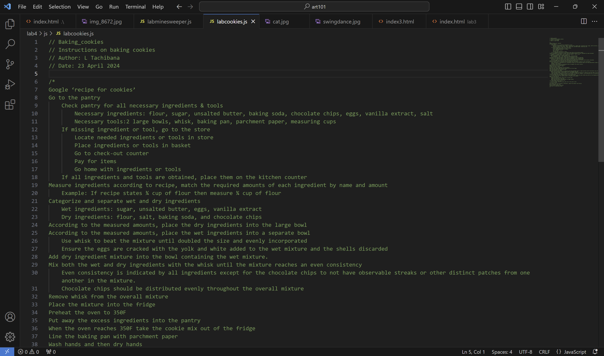
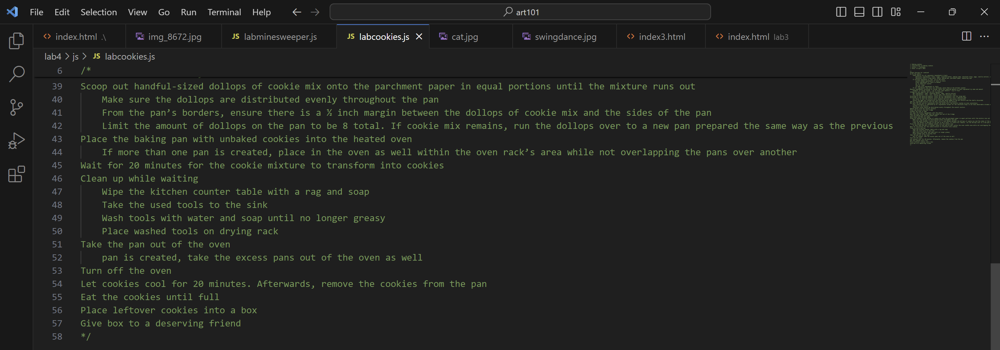
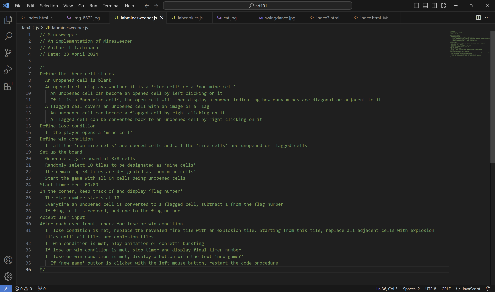

Lab 4 - Pseudocoding and Problem-solving
What I did for this Lab
For this Lab, my partner and I worked together to pseudocode instructions for baking cookies and the game Minesweeper. Then we put in into our javascript files as comments.
Difficulties encountered
I definitely underestimated the difficulty of psuedocoding even simple everyday tasks I do all the time. For baking cookies, Kristine and I were imagining making a list for an alien/robot who had never seen or heard of baking before. We tried to make instructions that were as straightforward and broken down as possible, which meant spelling out a lot of tasks that we would norally implicitly understand.
Pseudocoding Minesweeper was particularly hard. I hadn't realised how complicated the internal workings of the game could be. We realised that before we even got to the actual steps, we would have to define a lot of terms. We had to reference some examples to figure out how we could order and word it.
The results...
Here is our final pseudocode! I think our lists are pretty clear and broken down.
Pseudocode for baking!
Google ‘recipe for cookies’
Go to the pantry
Check pantry for all necessary ingredients & tools
Necessary ingredients: flour, sugar, unsalted butter, baking soda, chocolate chips, eggs, vanilla extract, salt
Necessary tools:2 large bowls, whisk, baking pan, parchment paper, measuring cups
If missing ingredient or tool, go to the store
Locate needed ingredients or tools in store
Place ingredients or tools in basket
Go to check-out counter
Pay for items
Go home with ingredients or tools
If all ingredients and tools are obtained, place them on the kitchen counter
Measure ingredients according to recipe, match the required amounts of each ingredient by name and amount
Example: If recipe states ¾ cup of flour then measure ¾ cup of flour
Categorize and separate wet and dry ingredients
Wet ingredients: sugar, unsalted butter, eggs, vanilla extract
Dry ingredients: flour, salt, baking soda, and chocolate chips
According to the measured amounts, place the dry ingredients into the large bowl
According to the measured amounts, place the wet ingredients into a separate bowl
Use whisk to beat the mixture until doubled the size and evenly incorporated
Ensure the eggs are cracked with the yolk and white added to the wet mixture and the shells discarded
Add dry ingredient mixture into the bowl containing the wet mixture.
Mix both the wet and dry ingredients with the whisk until the mixture reaches an even consistency
Even consistency is indicated by all ingredients except for the chocolate chips to not have observable streaks or other distinct patches from one another in the mixture.
Chocolate chips should be distributed evenly throughout the overall mixture
Remove whisk from the overall mixture
Place the mixture into the fridge
Preheat the oven to 350F
Put away the excess ingredients into the pantry
When the oven reaches 350F take the cookie mix out of the fridge
Line the baking pan with parchment paper
Wash hands and then dry hands
Scoop out handful-sized dollops of cookie mix onto the parchment paper in equal portions until the mixture runs out
Make sure the dollops are distributed evenly throughout the pan
From the pan’s borders, ensure there is a ½ inch margin between the dollops of cookie mix and the sides of the pan
Limit the amount of dollops on the pan to be 8 total. If cookie mix remains, run the dollops over to a new pan prepared the same way as the previous
Place the baking pan with unbaked cookies into the heated oven
If more than one pan is created, place in the oven as well within the oven rack’s area while not overlapping the pans over another
Wait for 20 minutes for the cookie mixture to transform into cookies
Clean up while waiting
Wipe the kitchen counter table with a rag and soap
Take the used tools to the sink
Wash tools with water and soap until no longer greasy
Place washed tools on drying rack
Take the pan out of the oven
pan is created, take the excess pans out of the oven as well
Turn off the oven
Let cookies cool for 20 minutes. Afterwards, remove the cookies from the pan
Eat the cookies until full
Place leftover cookies into a box
Give box to a deserving friend
Pseudocode for Minesweeper!
Define the three cell states
An unopened cell is blank
An opened cell displays whether it is a ‘mine cell’ or a ‘non-mine cell’
An unopened cell can become an opened cell by left clicking on it
If it is a “non-mine cell’, the open cell will then display a number indicating how many mines are diagonal or adjacent to it
A flagged cell covers an unopened cell with an image of a flag
An unopened cell can become a flagged cell by right clicking on it
A flagged cell can be converted back to an unopened cell by right clicking on it
Define lose condition
If the player opens a ‘mine cell’
Define win condition
If all the ‘non-mine cells’ are opened cells and all the ‘mine cells’ are unopened or flagged cells
Set up the board
Generate a game board of 8x8 cells
Randomly select 10 tiles to be designated as ‘mine cells’
The remaining 54 tiles are designated as ‘non-mine cells’
Start the game with all 64 cells being unopened cells
Start timer from 00:00
In the corner, keep track of and display ‘flag number’
The flag number starts at 10
Everytime an unopened cell is converted to a flagged cell, subtract 1 from the flag number
If flag cell is removed, add one to the flag number
Accept user input
After each user input, check for lose or win condition
If lose condition is met, replace the revealed mine tile with an explosion tile. Starting from this tile, replace all adjacent cells with explosion tiles until all tiles are explosion tiles
If win condition is met, play animation of confetti bursting
If lose or win condition is met, stop timer and display final timer number
If lose or win condition is met, display a button with the text ‘new game?’
If ‘new game’ button is clicked with the left mouse button, restart the code procedure
Screenshots!
Screenshot of baking pseudocode
 Screenshot of Minesweeper pesudocode
